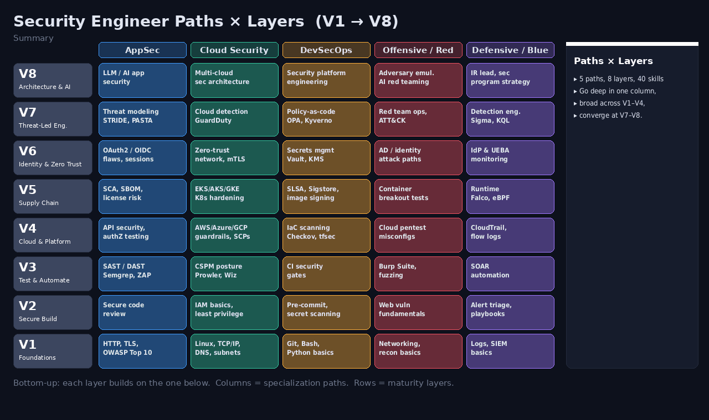

An interactive roadmap that maps five security engineering specializations across eight maturity layers, from foundations to architecture and AI security. Read it bottom-up: each layer builds on the one below.

Security career advice is usually either a flat list of tools or a single-track roadmap. In practice, AppSec, Cloud Security, DevSecOps, red teams and blue teams grow through the same maturity stages, just with different tools at each stage. This grid puts them side by side.
Engineers can see where they are today in each path, spot the adjacent skill one layer up, and see how the paths connect. For example, IaC scanning in DevSecOps links to cloud guardrails and to cloud penetration testing. Click a layer to stack it, click a cell for detail, or press Play to animate V1 to V8.
All content lives in a single JSON file, so the roadmap can be updated or extended without touching the interface. It is one HTML file with no dependencies, hosted free on GitHub Pages.
roadmap.json, so contributions are a one-file pull request